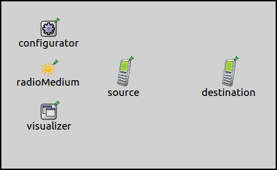

Statistics collected by submodules can be visualized at nodes, on the top level canvas. Usually statistics are analyzed after that the simulation has concluded, but it can be useful to see the values of a statistic as the simulation is running. This could help in troubleshooting and verifying simulation models. This example contains two configurations, showing the basics and the more advanced features of the visualization.
The StatisticVisualizer displays and keeps track of the last value of a statistic. The sourceFilter parameter selects the submodule which has the statistic. The signalName parameter sets a signal to subscribe to. The statisticName parameter selects the statistic to display. By default, this is the same as the signalName parameter.
The StatisticVisualizer displays and keeps track of the last value of a statistic. It is notified of value changes by subscribing to a signal, which is selected by the signalName parameter. The sourceFilter parameter selects which modules should be the source of the signals it subscribes to. The statisticName parameter selects the statistic to be displayed. By default, this is the same as the signalName parameter.
The visualizer displays the statistic value with a string prefix, selected with the prefix parameter. By default, the prefix is the statistic name. The unit parameter selects what unit to display the value in. By default, it's the unit of the statistic. Additionally, the displayed value can be limited by the minValue and maxValue parameters.
The first configuration uses this simple network:
It contains two AdhocHosts, an IPv4NetworkConfigurator, an IntegratedVisualizer, and an Ieee80211ScalarRadioMedium module. The hosts are stationary, and source is configured to ping destination.
The configuration of the visualization in omnetpp.ini is the following:
*.visualizer.*.statisticVisualizer.sourceFilter = "**.pingApp[*]" *.visualizer.*.statisticVisualizer.signalName = "rtt" *.visualizer.*.statisticVisualizer.unit = "ms" *.visualizer.*.statisticVisualizer.minValue = 0 *.visualizer.*.statisticVisualizer.maxValue = 2E-3
This sets all pingApps as the signal source. The signal name is set to rtt, and the since there is no statistic name specified, it is also the statistic name. The unit of the statistic is seconds, but the visualizer is set to display it in milliseconds. There is also min and max value limits set to the displayed value.